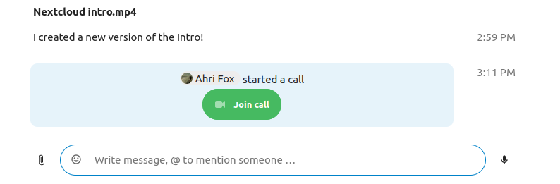

Приступ позиву или чету као гост
Nextcloud Talk омогућава аудио/видео позив и текст чет интегрисане у Nextcloud. Обезбеђује веб интерфејс као и мобилне апликације.
Више о Nextcloud Talk можете да сазнате на нашем веб сајту.
Приступање чету
Ако примите линк на чет празговор, можете да га отворите у свом интернет прегледачу и тако приступите чету.

Ваше име можете да промените тако што кликнете на дугме Уреди које се налази горе десно.

Подешавања ваше камере и микрофона могу да се пронађу у менију Подешавања. Тамо такође можете да пронађете листу пречица које можете да користите.

Приступање позиву
Позив можете да започнете у било које време дугметом Започни позив. Остали учесници ће бити обавештени и моћи ће да се придруже позиву. Ако је неко други већ започео позив, дугме ће се променити у зелено Приступи позиву.

Пре него што се заиста прикључите позиву видећете проверу уређаја где можете да изаберете одговарајућу камеру и микрофон, укључите замућење позадине или чак да се прикључите било којим уређајем.

Током позива, подешавања за камеру и микрофон можете да пронађете у ... менију који се налази на линији у врху прозора.

За време позива, можете да утулите свој микрофон и да искључите видео дугмадима која се налазе горе десно, или да употребите пречице M да утулите звук и V да искључите видео. Такође можете да употребите размакницу да укључите/искључите укидање звука. Када вам је звук искључен, притисак на размакницу ће укључити звук тако да можете да причате све док не отпустите размакницу. Ако је звук укључен, притисак на размакницу ће да утули звук све док је не отпустите.
Ваш видео можете да сакријете (што је корисно за време дељења екрана) малом стрелицом која се налази непосредно изнад видео тока. Вратите га назад поновним притиском на малу стрелицу.
Још подешавања
У менију разговора можете да изаберете прелазак у режим пуног екрана. То такође можете да урадите користећи тастер F на тастатури. У подешавањима разговора можете да пронађете опције за обавештења и комплетни опис разговора.